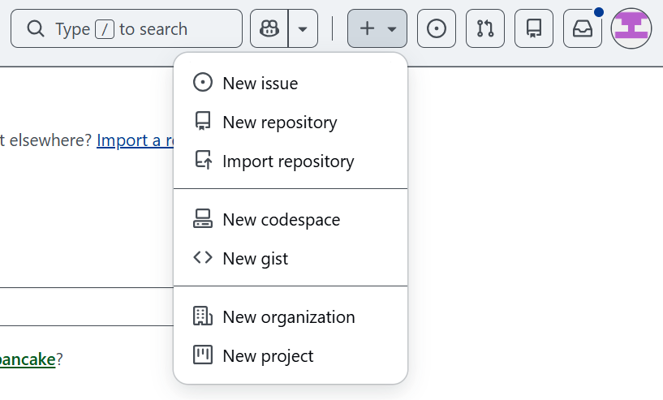
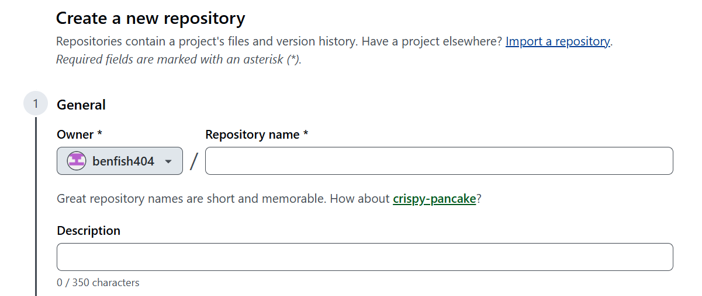
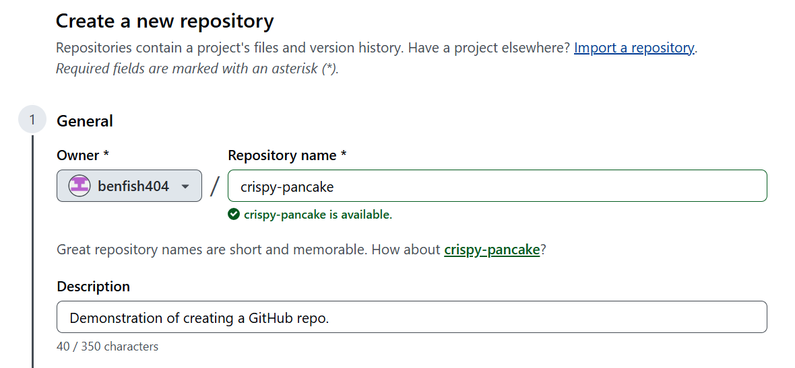
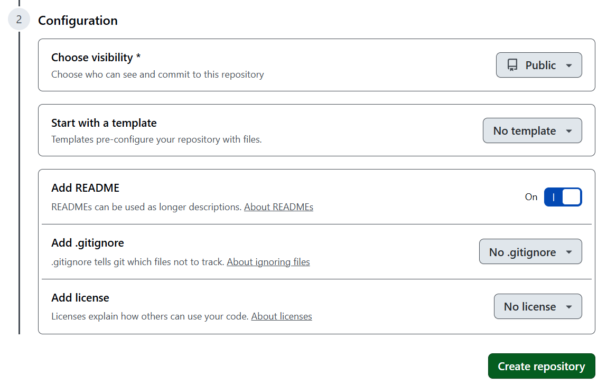
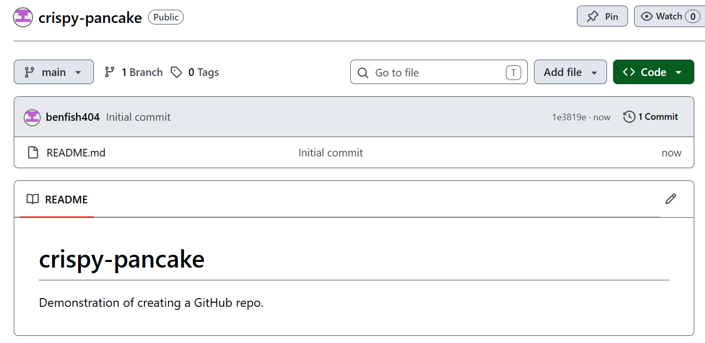

Module 1
Lab
Creating a new repository
You can create a new repository on your personal account or any organization where you have sufficient permissions.
On the GitHub website, you can create a new repository by clicking the plus “+” icon on the top right toolbar. You can alternatively navigate to https://github.com/new

Once on the Create a new repository page, you can start configuring your repo. You should first verify that your account is the repo owner. If you are part of an organization, you can instead choose to make that organization the owner.
GitHub always suggests a repository name you can use, or you can come up with a name on your own. In practice, it is helpful to name your repository something descriptive, but for demonstration purposes we can use the suggested name.

On the topic of repo names, different users can use the exact same repo name, but each user can only have unique repository names associated with their account. This means that everyone could have one repo called “ZAMBI-RDM”.
Populate the name and description fields as needed. Descriptions are generally recommended but not required. Clicking on the suggested name (in this case, crispy-pancake) will automatically fill the name field.

Now, we want to configure our repo. You will be met with several options under this section.

Visibility
Since for this demonstration our repository will not contain any sensitive information, it is okay to set our repo visibility to public. There are other scenarios where you may want to consider using a private repository, and you can read more about that here.
Templates
You can generate a new repository with the same directory structure and files as an existing repository. This can be useful in certain scenarios, such as reducing manual configuration of repos. You can learn more about templates here
However, in our case, we will not use a template.
README
As the name suggests, README files are intended for other people to read in order to understand your project. README files are typically found in the top-level directory, meaning it is found within the folder that contains the entirety of your repo. A README file should be created and stored in a file format that is easily readable, such as Markdown or even plain text. The GitHub Docs provides a comprehensive overview of README files here
We will initialize our repo with a README file, which we will edit later.
.gitignore
You can configure Git to ignore files you don’t want to track changes for with a .gitignore file. This can be useful when you are generating temporary files or outputs that you do not want to share with others.
There are other methods of ignoring files which will not be covered in this tutorial, but you can read more here
The dropdown menu provides several templates for populating a .gitignore file, however we will manually create this file later.
License
By default, you are considered the copyright holder of the contents you create within your repo. For open-source projects, you would instead want to choose a license for your repo that reflects your project’s intended use. You can learn more about licensing your repository here.
For our intents and purposes, we will accept the default of no license.
Finally, we can create our repository by clicking the green button!
Once the repo is successfully created, you will be greeted with a page that looks similar to this. Notice that your README.md file was populated with a description if you provided one in the previous step. Also notice that the About section of your repo, on the right, also contains this description if you provided one.
